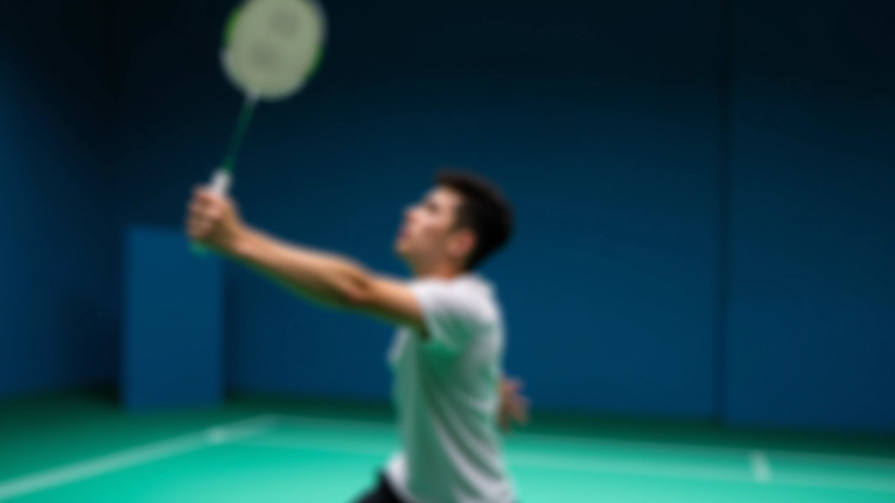
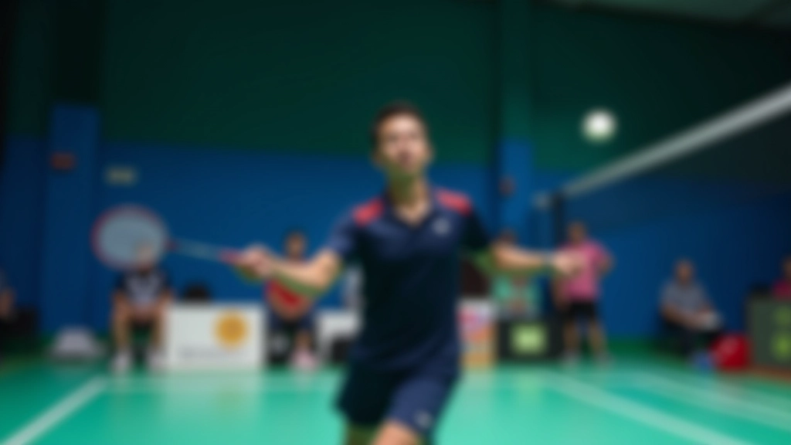
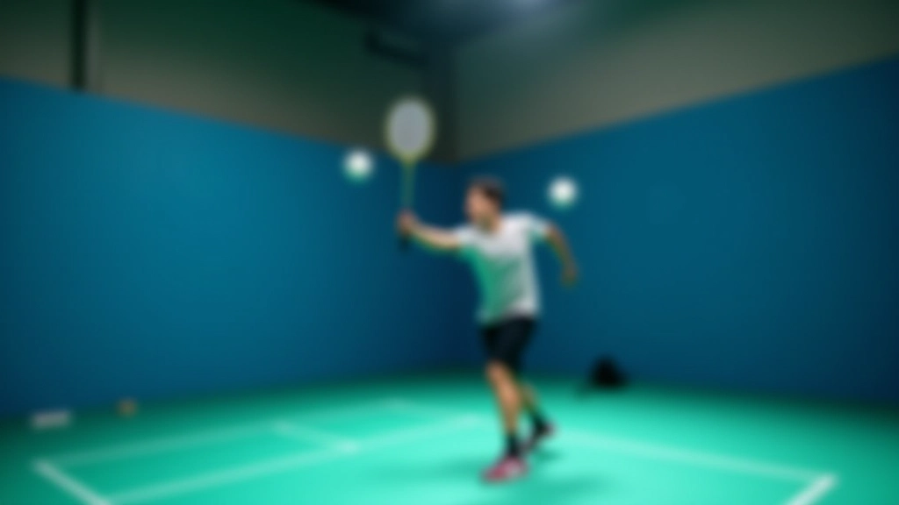

فن اللوب: ضربة دفاعية قوية
اكتشف كيف تحول اللوب لعبتك الدفاعية. هذه الضربة تعطيك الوقت والمسافة اللازمة للعودة إلى الملعب بقوة.

ما هي ضربة اللوب؟
اللوب ليست مجرد ضربة — إنها استراتيجية دفاعية ذكية. عندما يضغط عليك الخصم برميات سريعة وقريبة من الشبكة، اللوب هو ردك القوي. تحذر الريشة عالياً فوق رأس الخصم، مما يجبره على التراجع للخلف ويعطيك الوقت الثمين للعودة إلى موقعك.
الفرق بين اللوب الضعيف واللوب الفعّال هو في التحكم والعمق. لوب سيء يهبط قرب الخط الخلفي ويعطي الخصم فرصة ذهبية للقتل. لكن لوب صحيح؟ إنه يضع الخصم في موقف محرج — إما أن يأخذ خطوة كبيرة للخلف، وإما يسقط الريشة.
المفتاح
اللوب الجيد يجب أن يصل إلى عمق ملعب الخصم — 60-70 سم من خط النهاية على الأقل.
خطوات تنفيذ اللوب بشكل صحيح
الوقفة والتوازن
قدماك تكونان على عرض أكتافك، ركبتاك منحنيتان قليلاً. الجسم مستعد للحركة. الأهم: ما تكوني بعيداً جداً عن الشبكة — عادة من 1.5 إلى 2 متر.
حركة الذراع
خذ الريشة بارتفاع منخفض — حوالي مستوى الوسط. ذراعك تتحرك من الأسفل للأعلى بحركة سلسة، وليس حادة. المضرب يجب أن يكون بزاوية 45 درجة تقريباً عند ملامسة الريشة.
نقل الوزن
وزنك ينتقل من القدم الخلفية للأمامية أثناء الضربة. هذا يعطيك قوة إضافية دون أن تضطر لتحريك ذراعك بقوة مبالغة — والقوة تأتي من الجسم، ليس من الذراع فقط.
المتابعة
بعد الضربة، ذراعك تستمر في الحركة للأعلى وقليلاً للأمام. لا تتوقفي عند لحظة الاتصال — المتابعة الصحيحة تضمن دقة أفضل وقوة أكثر اتساقاً.


الأخطاء التي تفسد اللوب
الضربة القصيرة جداً
أكثر خطأ شيوع. الريشة تهبط قريبة من خط الـ 17 متر، والخصم يأخذ خطوة واحدة للخلف ويقتل اللوب. السبب؟ عادة تأخذ الريشة بارتفاع عالي جداً، أو لا تنقل وزنك بشكل صحيح.
الحركة الضيقة جداً
تضرب باستخدام ذراعك فقط، بدون أن يشارك جسمك. النتيجة؟ لوب ضعيف بلا قوة حقيقية. الحركة الصحيحة تبدأ من الأرجل والوسط، ثم الذراع تتابع.
عدم التركيز على العمق
اللوب يصعد عالياً — صحيح. لكنه ينزل بسرعة كبيرة. الريشة تسقط قرب الخط الخلفي بدل أن تصل إلى منتصف الملعب الخلفي. هذا يحدث عندما تكون زاوية المضرب شديدة جداً (فوق 60 درجة).
ملاحظة مهمة
هذا المحتوى مخصص للتعليم والمعلومات. التقنيات الموضحة هنا تعتمد على أساليب مجربة في تدريب الريشة الطائرة. لكل لاعب احتياجات مختلفة، وما يعمل مع شخص قد لا يعمل مع آخر. إذا كنت تشعر بألم أو عدم راحة عند التدريب، توقف وتحدث مع مدربك أو متخصص.
تمارين لتحسين اللوب
المعرفة بالتقنية لا تكفي — تحتاج إلى التكرار. هنا تمارين عملية يمكنك تطبيقها الآن.
تمرين الهدف
ضع ثلاث نقاط في الملعب الخلفي للخصم (قرب الخطوط الجانبية وفي المنتصف). لعب 20 لوب — كم منها وصل إلى منطقة الهدف؟ الهدف: 18 من 20 على الأقل.
تمرين الحائط
قف على بعد 3 أمتار من الحائط. ارمِ الريشة نحو الحائط بحركة لوب (بنفس التقنية)، واستقبلها وكررها. هذا يساعدك على الشعور بالحركة الصحيحة دون الحاجة إلى شريك.
لعبة التبديل
مع شريك، لعب نقطة طبيعية لكن قرر مسبقاً أن كل ضربة يجب أن تكون لوب. هذا يجبرك على التفكير أثناء اللعب ويحسن الاستقرار.

الخلاصة: اللوب يغير اللعبة
اللوب ليست حركة دفاعية بسيطة — إنها سلاح استراتيجي. عندما تتقنها، تكسب الوقت والمسافة والثقة. بدل أن تضغط على نفسك للهروب من هجوم قريب من الشبكة، تصعد الريشة عالياً وتعود إلى موقعك بهدوء.
ابدأ بالأساسيات: الوقفة الصحيحة، حركة الذراع من الأسفل للأعلى، نقل الوزن. مارس مع الحائط أولاً إذا احتجت. بعد بضعة أسابيع من التكرار، ستشعر بالفرق. والمرات الآتية عندما يضغط عليك الخصم برميات سريعة، ستبتسم — لأنك تعرف الرد المثالي.
تعلم التمارين العملية الأخرى
فريق الريشة العالية التحرير
فريق التحرير والمراجعة
كتبه فريق تحرير الريشة العالية، المتخصص في تقديم تمارين عملية وسهلة المتابعة لتحسين الضربة العالية واللوب.
قراءات أخرى

أساسيات الضربة العالية: من البداية
تعلم الخطوات الأساسية للضربة العالية من الصفر. نغطي وقفة القدمين والقبضة وحركة الذراع الصحيحة.

تمارين عملية لتحسين دقة الضربة
5 تمارين فعّالة تزيد من دقتك وسيطرتك. يمكنك تطبيقها في التدريب الفردي أو مع الفريق.

تقنيات متقدمة: إتقان الضربتين
للاعبين المتقدمين: تعمق أكثر في التفاصيل الدقيقة والحيل التي تفصل بين اللاعب الجيد والممتاز.